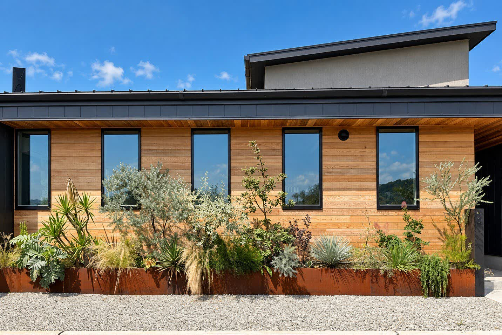
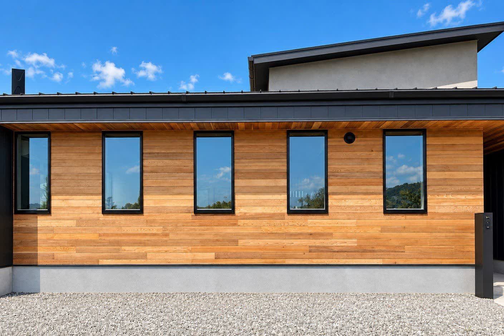
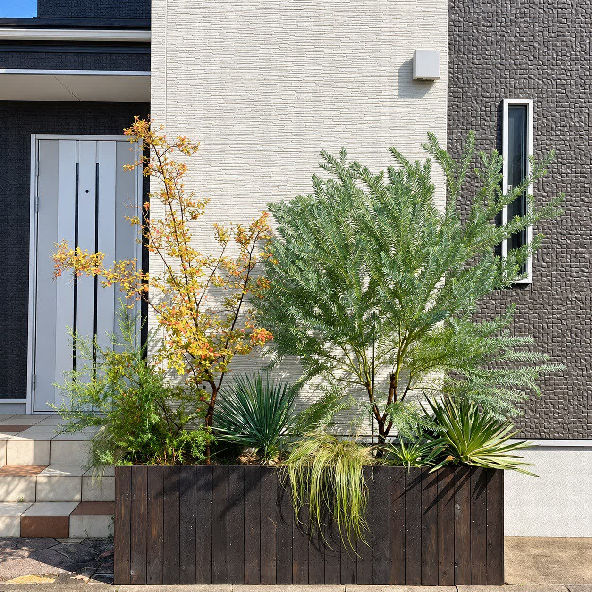
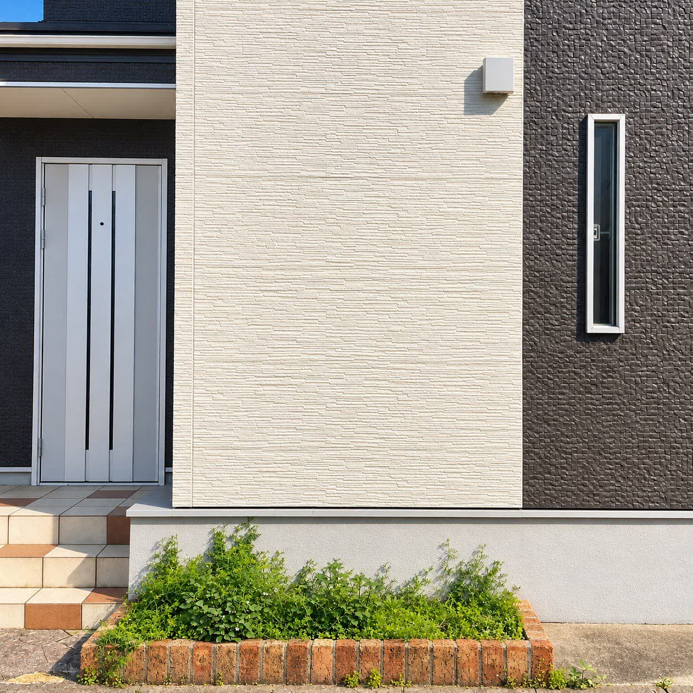
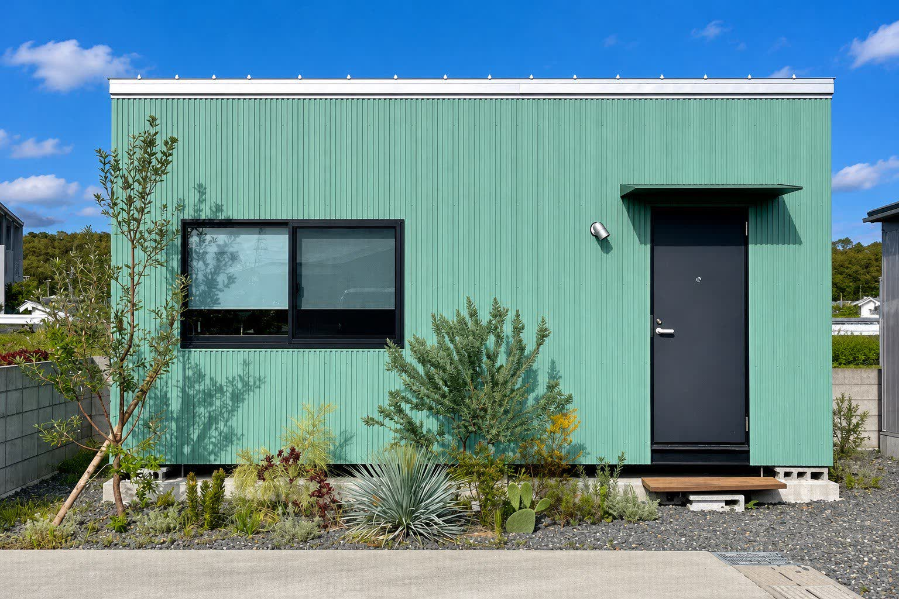
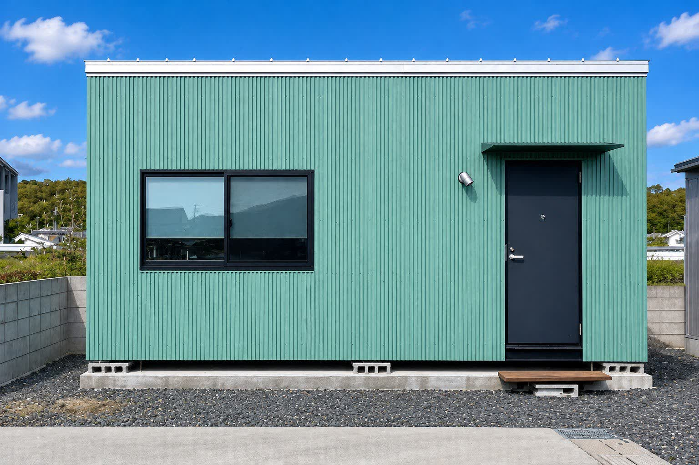

BeforeAfter鉄が縁取る景色
無機質な鉄と、有機的な植物。
時とともに鉄は表情を変え、植物は枝葉を広げていき、
異なる素材がそれぞれの時間を重ね、少しずつその場所に馴染んでいく。
完成した瞬間だけでなく、その先の変化まで愉しむ庭に仕上げました。
施工事例
住まいの庭、エントランス、外構
これまでに手がけた仕事です。
植える前と、植えたあと。中央の線を左右に動かすと、同じ場所の変化を見比べられます。


BeforeAfter無機質な鉄と、有機的な植物。
時とともに鉄は表情を変え、植物は枝葉を広げていき、
異なる素材がそれぞれの時間を重ね、少しずつその場所に馴染んでいく。
完成した瞬間だけでなく、その先の変化まで愉しむ庭に仕上げました。


BeforeAfter雑草に埋もれていたレンガの花壇を、焼杉のプランターに作り替えました。白い外壁の前で葉の形が際立つよう、ユッカと細い葉のグラスを組み合わせています。


BeforeAfter黒い砂利だけだった建物の前に、
オリーブ、アガベ、サボテンを植えました。
乾燥に強い植物なので、
水やりは夏場に少しで足ります。
※施工事例は順次追加していきます。
Contact
Instagram の DM からも
お問い合わせいただけます。